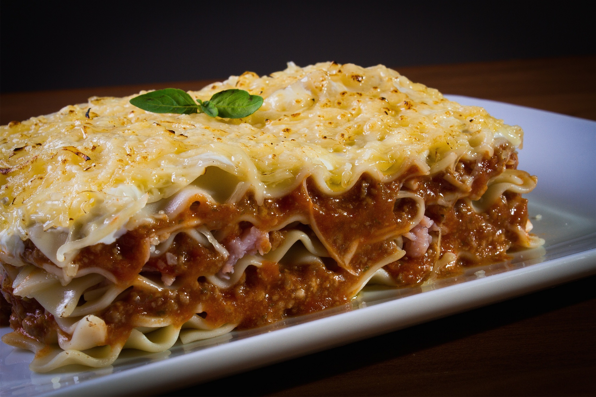

Photo from PxHere is licensed under CC0 1.0
The perfect lasagna recipe made with parmesan ricotta cheese filling, melted mozzarella cheese, lasagna noodles, and a robust tomato meat sauce. It is the best lasagna recipe!
This is a classic homemade lasagna recipe made with layers of gooey melted mozzarella cheese, a parmesan ricotta cheese, and a robust tomato meat sauce. It is perfect for weeknight dinners, potlucks, or to take to friends who just had a baby. This lasagna recipe can be frozen so it is perfect to made ahead of time. It also makes flavorful leftovers.